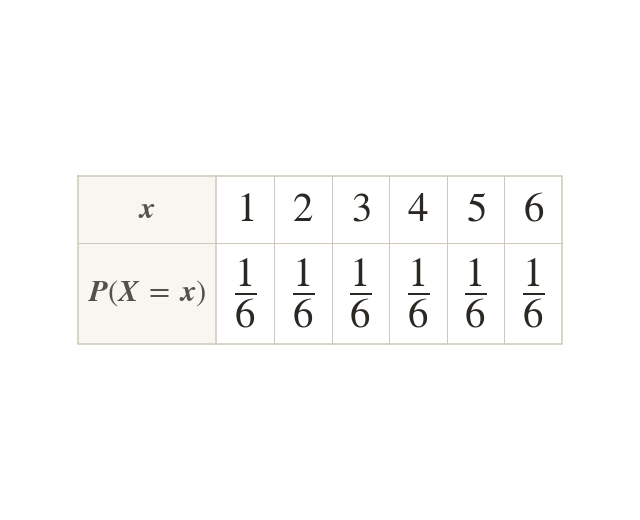
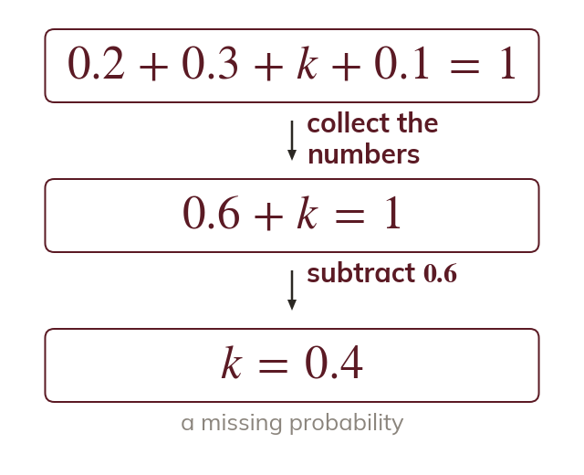
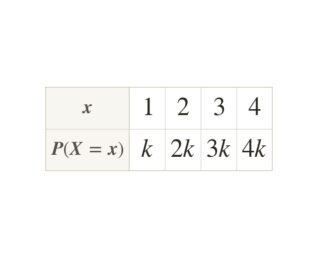
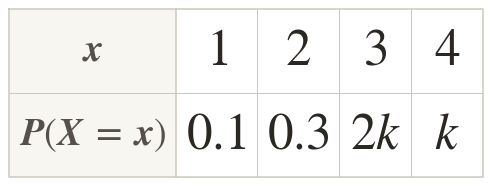
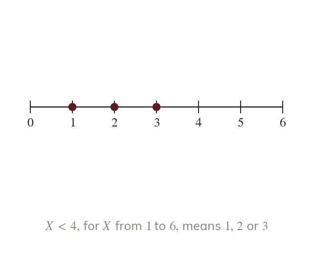
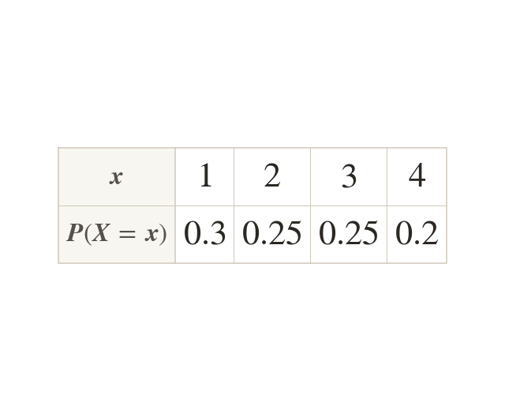
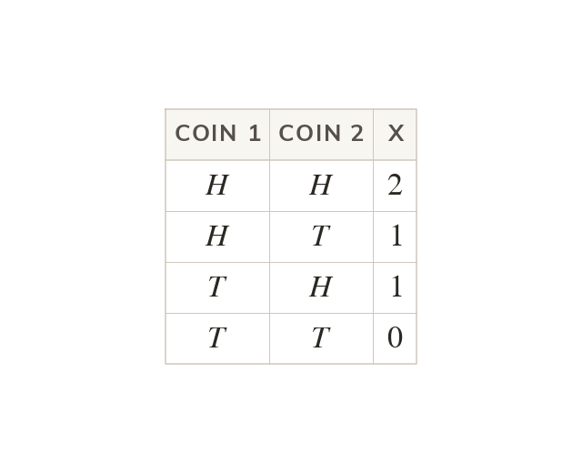
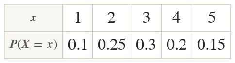

Random variables
A random variable takes its values by chance, and small stands for one value it takes. Its probability distribution gives for every value.
A probability distribution lists every value a random variable can take with its probability, so a whole experiment is described at once. The binomial distribution in the next lesson is one such distribution, given by a formula.
Work down the page at your own pace. Write every answer in your book first, then click to check it.
Read each card, then follow the worked examples one step at a time.

A random variable takes its values by chance, and small stands for one value it takes. Its probability distribution gives for every value.

Every possible value is listed, so the probabilities add to
This finds a missing probability or an unknown constant.

A distribution can be a rule, such as for
Substitute each value of then add the results to

Pick an answer. If it's wrong, the feedback tells you which mistake it was.
Write the blanks in your book first, then tap each one to check.
Read each card, then follow the worked examples one step at a time.

For a discrete includes but does not. Add the probabilities of the values that fit.

can be quicker than adding the rest. The values left out have probability minus the values kept.

List every outcome and find the value of for each, then collect equal values. Two fair coins give , and for the number of heads

Pick an answer. If it's wrong, the feedback tells you which mistake it was.
Write the blanks in your book first, then tap each one to check.
Finished? Next lesson: 12.S6.2 The Binomial Distribution.
For each skill, tap the one that is true for you today. Your Revise pages start with anything you mark Not yet.
Your ratings are saved on this device only.
Log in, then search for a code to practise that skill.